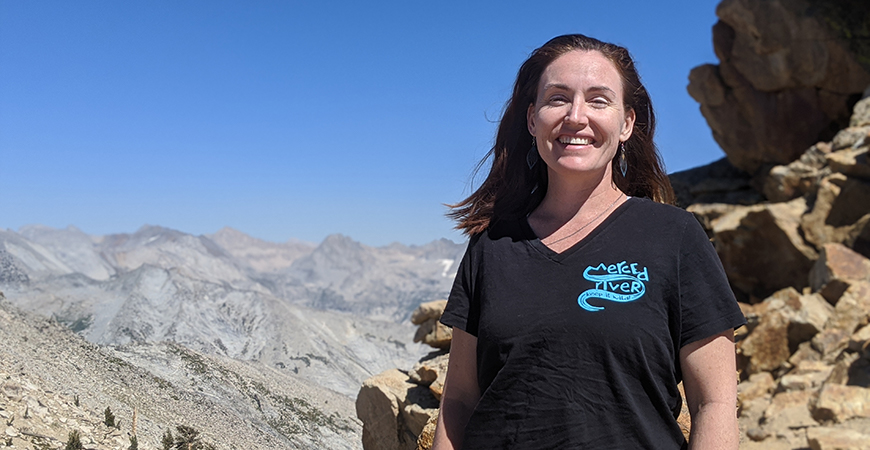

Bernacchi Publishes Guide to
Sequoia & Kings Canyon National Parks
March 30, 2021
By Elizabeth Arakelian, UC Merced
Leigh Bernacchi is the program director of the Center for Information Technology Research in the Interest of Society.
After spending a year working and studying remotely, many people are ready to get out from behind their computer screens and spend some time in nature.
Those interested in exploring the great outdoors can venture to the lesser-known
Sequoia & Kings Canyon National Park, about one hour east of Fresno. Many go for
the famous wildflower bloom, but if you’re not sure where to start, grab Leigh
Bernacchi’s recently published guide “Sequoia & Kings Canyon National
Park: Hiking, Camping, Waterfalls & Big Trees” (Moon, 2021) and hit the road and
trail.
Bernacchi is the program director of UC Merced’s Center for Information Technology Research in the Interest of Society (CITRIS) and a staff researcher for the Sierra Nevada Research Institute (SNRI). A native of the Sierra Nevada foothills, Bernacchi worked as a naturalist ranger in Sequoia, Denali and Yosemite national parks before joining the campus in 2015. She is interested in the intersection of public participation, natural resources and wildlife — all of which have informed her scientific pursuits and this travel guide.
“This book is a love letter to our Valley community members, to get out and experience the astounding beauty, in every season, of these wild parks,” Bernacchi said. “Whether hiking solo or with friends, with my grandma or my kid, I researched this book over several years to create each itinerary and experience. There’s something for everyone, and it’s so close to UC Merced.”
Sequoia and Kings Canyon boasts the highest peak in the lower 48 states — Mount Whitney — and the Giant Sequoias, including General Sherman, the largest living being in the world. The geologic wonders carved out by the Kings River range from granite with massive crystals to metamorphics. Waterfalls and verdant meadows fill every valley. Bernacchi has spent time in Sequoia & Kings Canyon as a ranger, tourist and a mom.
Her book is full of suggested itineraries, hiking guides, cabin recommendations and more. With limited Wi-Fi and cell phone access, it’s smart to have Bernacchi’s book on hand when venturing to Sequoia & Kings Canyon.
Those interested in learning more can find Bernacchi’s book here.